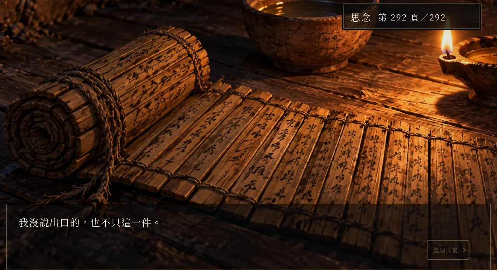
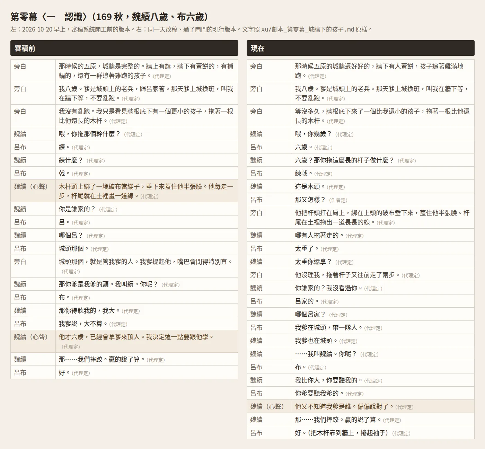
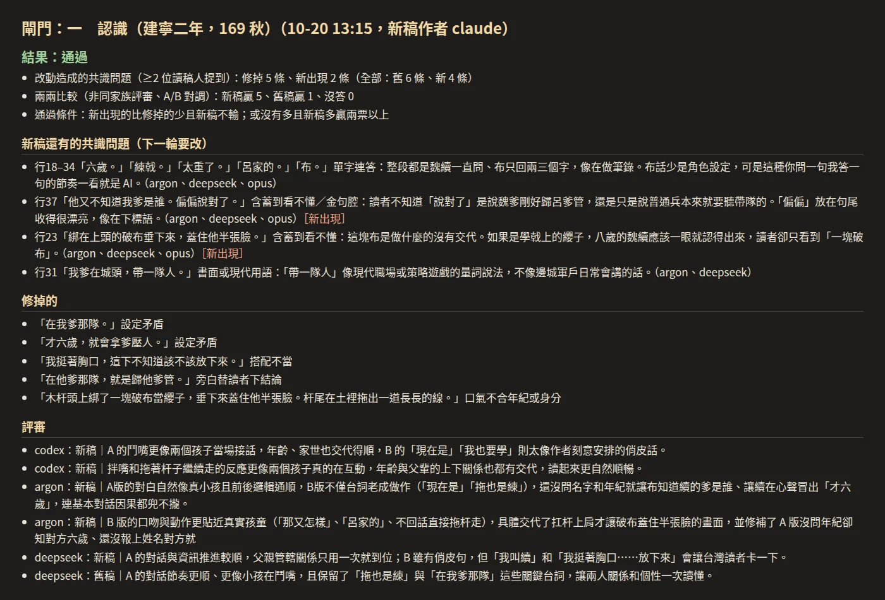

劇本與心聲
《續》全劇約四千句台詞，其中一千多句是魏續的心聲。這一章講這些句子怎麼寫、怎麼改：我試玩時退回了哪些句子，退回的理由怎麼變成寫稿規則和檢查程式，最後怎麼做成一道讓不同家族的 AI 互相審稿的閘門。只看一段的話，我推最後那道閘門：寫稿的 AI 不判自己的稿，換不換進劇本由程式算。
開案那天先定的事：心聲說不出口
《續》是《仙泉．香布纏》同一段故事，換成魏續的視角，玩家扮演的是魏續：從五原城破（173）走到谷口那碗水（223），最後由玩家替他選喝或不喝。2026-10-05 開案那天，我一條一條定，AI 一條一條寫進 xu/設計.md，那一天 xu/ 底下有 56 個提交。
設計檔裡叫「核心機制」的那一條也是那天定的：每章有一兩個時刻跳出選項，玩家選的是他的心聲，可是不論選哪一句，說出口的都是沉默，或前作裡一句不相干的話（「進來。」「嗯。」「這邊我顧著。」）。選的那句記進背包裡，成為一樣只有玩家看得到的道具，我把它叫「思念」。不喝的結局，臨死前的回想會把這些話一句一句帶回來。
2026-10-07 我又定了寫法：《續》要讓玩家完完全全明白所有事，原作那種只露痕跡的冰山寫法這一部不用。不變的只有一件：他從來沒對布說出口。他當時不知道的事，由老了的魏續用旁白說清楚：「這些，是後來她們告訴我的。」
設定以 buchan/canon.md 為準，呂布一家（呂布、貂蟬、嚴湘、呂荃、魏續）的事都寫在那裡，別的作品寫到這一家也一律查它。設計《續》時我新定的事，例如魏續被拖走後在表親嚴家住了三年、約 176 年才為了修城搬回五原，也寫回正典，提交訊息標「續與正典」，共 9 次；正典的冰山原則旁邊也註明「《續》不適用」。改原作之前要先跑 python3 buchan/check_canon.py，它擋幾種已經定掉的寫法，例如貂蟬自稱「奴家」（她自稱「妾」）、布叫湘「阿湘」（布叫「湘兒」）。AI 不准自己動 canon.md，要我點頭。
劇本檔長什麼樣
每一章一個 Markdown 檔，例如 xu/劇本_第一章_城牆下.md，一場戲一個 ## 小節，台詞是兩欄表格「講者｜台詞」。講者寫「魏續（心聲）」的，遊戲裡只有玩家看得到。表格之間用【地圖】【事件】【日常】【心聲選項】寫演出：走到哪裡觸發、哪些事可做可不做。每句後面標來源：「（作者定）」是我確認過的字，「（代理定）」是 2026-10-13 我授權 AI 接著完稿的字。建置程式（入口是 xu/game/src/build.py）讀這些檔、拿掉兩種標記，產出 Larch 的專案 JSON。
另外兩種劇本檔：劇本_想念_*.md 是日常裡偶爾冒出來的心聲。我 2026-10-15 說過，玩家做生活小事時，要「時不時就會觸發到與布相關的感覺」，而且「各種情緒，但都能被解讀成因為愛」。xu/game/src/thought_plan.py 把每一節掛到地圖上的路人或標記，互動時有一定機率冒出一句。劇本_生活小事.md 是劈柴、挑水、煎藥這類小任務的台詞，AI 先寫了約 290 件提案，再挑做得出來的進遊戲。
先定心境，再寫心聲
2026-10-15 我在本機預覽玩第一到三章，留了 51 則回饋，還交代：「後面也一樣照我講的方向去修改，盡可能不要再讓我檢查出相同問題。」關於心聲的方向是用白話、寫長，把思念、擔心、憂傷寫滿，外表冷靜、內心波瀾。AI 照這個方向把第四到九章的心聲 106 句改成白話長句，三個子代理各改兩章。
同一天晚上我又抓到一句：「想叫住奉先的話…這個家就沒有我站的位子…我就賺到了」。我說有點問題，要先定出魏續真實的心境，再用那個心境去寫。AI 寫了 xu/心境.md：他愛她，不說的理由只有一個，說出口她就得替他想怎麼回，她已經扛了太多；他不算計，不用「賺到」「划算」；每句心聲動筆前過四個檢查。我補了兩件事進去。一是盟友：「原作中的湘，其實就很像是『說出愛以後和布修成正果的那種續』的可能性」，湘看得出他的心思，兩個人都不說破。二是脫稿：「偶爾能看似脫稿，也算是一種能表現出內心強烈情感的方式」，但「應該是我們設計好的脫稿演出」。規則定成每章最多一兩次、全劇約 10 到 14 次，台詞標「（脫稿）」。
我也問 AI：「我們有沒有系統地用各角色的心境、身心靈狀態寫出該角色會講的話？」它補了 xu/角色狀態.md，每個角色一張人生階段表。魏續分六段，續-1 少年到續-6 老年，再列一張「階段專屬句式表」：同手同腳、耳朵紅放在十八到二十二歲；排練了說不出口的話，只放到三十歲左右；「愛」字直說屬於六十二歲那碗水前面。
能用規則抓的部分，AI 寫成 xu/game/tests/check_voice.py，檔頭記著起因：我擔心失誤，要有嚴謹的架構。它先判斷每一列是哪一年、誰說的，再套規則。硬規則一出現檢查就失敗：冠禮（約 183 年）以前心聲叫布「奉先」、emoji、破折號、先否定再肯定的對比句、「奴家」、簡體字、中文裡夾半形標點。警告只列出來給人判斷：「愛」字出現在兩處以外、四十歲以後還同手同腳或耳朵紅、200 年以後還在排練、把愛當算帳、荃十八歲以後還用驚嘆號、一句心聲超過 140 字。
試玩退回的句子
2026-10-18 我回饋，嚴家那幾年的心聲讀起來魏續像花痴、很怯，第一次玩的人會覺得他很怪。AI 照這則寫了 xu/心聲語氣守則.md，找出三個原因：年紀不對（十二到十五歲時他跟布是玩伴，只能有兄弟、愧疚和想念）；每個念頭都繞回布（幹活、學刀、肚子餓、想爹娘幾乎沒寫）；口吻怯又黏（排練、愣住、嘴角壓不下去）。守則附了改前改後：
改前：要是布這時候從街角走出來，我大概先愣三下，然後事先想好的那句『你回來了』，說出口會變成『餅要不要』。
改後：我路過這個街角，腳會自己慢下來。以前布常從這裡跑出來，手裡拿著餅。現在街角空著，我還是慢了一步，才想起不用等了。
同一天 AI 掃第二到九章，列出全劇反覆出現的口頭禪：「嘴角壓不下去」20 處，「夠我高興一整天／一整年」5 處。我授權改了 31 句以後，嘴角剩 12 處，高興一整天剩 2 處，留下的都有情境，例如撿到箭尾那道刻痕、知道她還活著。
2026-10-20 我分章試玩，又退回幾類：
- 第七章我留了六則，說魏續太愛說笑、會鬼扯。AI 改了我點的六句，同一類的也一起改。
- 「咬住舌尖」讀起來像要自盡，改成「咬緊牙關」。
- 「又在那邊亂猜奉先了，很煩了」：心聲一直寫「奉先要是看見，大概會……」。全劇這種句子改掉 22 句。
- 「兩邊身上都亮了是什麼？如何解決 AI 一再使用這種方式講話？」：那句的意思是兩邊都受了傷，改成「都帶了傷」。
亂猜奉先和自創說法這兩類，變成審稿準則（xu/審稿/準則.md）第 14、13 條，也加進 check_voice.py 當硬規則：
GUESS = re.compile(r'奉先要是|要是奉先|奉先若是')
ODD = ['身上都亮了', '身上亮了'] # 自創說法（審稿/準則.md 第 13 條）：作者看不懂、問過的，加在這裡
assert GUESS.search('奉先要是看見，大概會笑我') and GUESS.search('要是奉先在') and not GUESS.search('奉先還活著，要是能見一面')
最後一行是給規則本身的檢查：該擋的要擋到，「奉先還活著，要是能見一面」這種正常的句子不能誤擋。ODD 那張清單抓到一次加一筆。
一起改「同一類」，也改到過不該改的句子。說笑那批送去閘門，十場過九場；沒過的是〈想念．路過（曹營）〉，AI 刪掉「鼻子有點酸，又覺得好笑」的後半句，評審六票都選舊稿，理由是那是鼻酸裡帶笑的真實心情，所以照規則換回舊稿（閘門見〈讓另一個 AI 抓問題〉一節）。
選了沒有回應：心聲分成兩類
後來發現一個問題：心聲選項選了沒有效果。2026-10-18 AI 先量現況：九章劇本的【心聲選項】69 處，生活小事 137 處，合計約 206 處；魏續說出口的台詞約 166 行，只有省略號或只有「嗯」的 16 行，約一成。「很多都是點點點」是感覺，真正讓人覺得沒回應的是結構：三個選項走到同一個結果，玩到第三次就學會了，之後兩百多次都在重複同一個經驗。
我那時對 AI 的要求是：參考知名 RPG 怎麼讓主角隨遊戲成長；愛不能一路只是一個「愛」字，要有微妙的變化；他沒有戰鬥力，但要有很多小場面讓他守護人，愛屋及烏。AI 的提案（xu/設計提案_成長弧與心聲改良.md）把心聲分成兩類，我當天批准：
- 第一類是對布說的話。維持原規則，選什麼說出口都一樣，但數量壓到全劇 12 到 15 個。
- 第二類是其他選項：對湘、荃、娘、同袍說的話，獨處時的取捨。這些一定要有回應，提案說最重要的一種是說出口的一樣、做的不一樣。提案的例子是布回家那一刻，說出口的都是「進來。」：選「妳去哪了」，他握緊門框；選「別走了」，他把門推得更開；選「妳瘦了」，他先去灶邊盛一碗熱湯。
最後保留選項的第一類關鍵時刻是 14 個，xu/game/src/first_class.py 在這 14 個選項上方加一行「說不出口的時刻」，玩家看到就知道這次選什麼都不會改變對話，只會被他記住。沒入選的第一類改成自動心聲，直接顯示一句。第二類每個選項掛一個心態標籤：守、藏、讓、等、近，選完畫面上方淡入一行「記下了：守」；check_xin.py 對照盤點表比對 588 個選項，一個選項只准一個標籤。第八章那二十五年，每年冬天坐上門檻刻痕時，旁白讀這一年最後一次選的心態，例如「這一年，我又把話吞回去。」

關係點數：先定上限，再回推事件
同一份提案還有關係階：布、湘、荃各五階（認得、在意、守著、默契、不用說），娘、蟬、成素各三階。做小任務、守護場面、關係事件會加點，升階時演一小場只屬於那兩個人的戲。
2026-10-18 我定的原則是：先定上限，再用上限回推事件；每個主角的關係都要能養滿，任何一條路徑都做得到，滿了有獎勵；同一件事的幾個選項加的點一樣，選項只改風格，關係好壞只看有沒有做。AI 開三個代理逐章盤點，列出 230 個會加點的事件。結論是布、湘、荃的事件遠多於上限，蟬和成素才是缺口：成素全劇只在第七章出場，玩家能互動的只有 2 件。AI 把上限定成「最差路徑的點數除以 1.3」，任何路徑都有三成緩衝，之後蟬和成素各補了 8 個新事件。
升階小場踩過兩次年代的錯，都是我試玩時抓到的：娘已經過世，墳前卻演了娘的升階小場；第七章划船時演出一段寫少年時候的小場。AI 改成升階小場只在劇本那幾年的章節演（rel_points.ERA、rel_points.GONE），別章跨過門檻只更新階數。
生活小事的玩法，方向更早就定了。2026-10-15 我說這是獨立遊戲，不只是讓玩家讀魏續的心聲：小事要有真的玩法，資源、時間壓力、有代價的選擇，並連到主線與結局；每件小事要練五種思考之一：注意、取捨、克制、記得、守候。
思念：每一句心聲配一張圖
開案時就定了，不喝結局的床邊回想會穿插玩家記下的心聲。2026-10-06 我再加一條：每個心聲時刻都要有一張圖。AI 列出九章 102 個心聲時刻，各配一張前作或本作的 CG，缺的 7 張新畫（xu/心聲CG對照.md）。回想照前作原句一句一句走，每一句後面插一句玩家在那一章記下的心聲，畫面換成記下那一刻的圖，加暗角、褪一點色；那一章一句都沒記，就不插。
碗前還有一段：選喝或不喝之前，「思念」從第一頁翻起，右上角顯示頁數，最後一頁是前作原句「我沒說出口的，也不只這一件。」

拿原作逐句對照
《續》有很多台詞是前作原句，設計檔寫明這些要照原句。2026-10-16 夜裡 AI 開了四條工作線（k1 到 k4），各拿一段劇本跟前作上線版台詞和正典逐句對，分三級：A 是跟原作明確矛盾，直接改；B 是原作沒寫、《續》補得合理，列給我知道；C 是原作沒有定論，等我拍板。隔天我全權授權，目標是盡量以原作為準：AI 有建議、而且建議靠向原作的，直接照改，只留幾項給我拍板。抓到的例子：
- 第八章魏續第一次坐上曹營的門檻，心聲寫「從下邳到現在，整整一年了」。第一道刻痕就在下邳城破那個冬天，改成「從下邳出來到現在，還不到一季。」
- 第八章麥城那段，他想像布「然後去磨戟」。綁成素的就是他，他知道那桿戟跟著替身上了白門樓，改成「然後一個人出去，站很久。」
- 《續》原本讓魏續對湘說過「手肘別翹」。前作裡湘是在荒原上聽布說這一句才認出布，魏續先說了，那一刻就會連到兩個人。改成話到嘴邊又嚥回去：「這句話是布的。等布回來，讓布自己跟湘說。」
- 「不會老」改成「老得很慢」，正典寫的是成年後老得很慢。
k2 還查出：它找到的 12 處 A 級裡，有 6 處是 2026-10-16 那一輪 Codex 審稿改掉的前作原句。那一輪讓 Codex 照 心境.md 審全部台詞、採用確實違反規則的，結果連該照原句的句子也改了，全部改回。2026-10-17 我也拍板兩件事：「姑娘」是明清才有的叫法，全劇不用，17 處依說話人與年份改掉；湘是這個家的軍師，她的前作原句一律還原。
改一句設定，掃一遍全劇
2026-10-20 早上 AI 只改了第零幕〈認識〉一場，我接著問：布的爹到底是城主，還是帶一隊人守城的？代理先前補的「布的爹是守城的軍官」已經一路寫進好幾個檔，沒有人回頭查。我說：「類似這種事你能主動修嗎，不要我提。」
之後的規矩是：改一句設定，就搜全部劇本、補全清單、角色卡；正典沒寫又非補不可的，選最不衝突的預設，記進 xu/審稿/設定帳.md，標「代理補」或「作者定」。這件事後來做進出貨指令：runner.py ship 會找出這次改掉的舊句子，看它在劇本、補全清單、角色卡、遊戲程式和測試裡還在不在，還在就拒絕提交，除非寫明理由。測試也綁著台詞，自動玩家會等某一句出現才往下走，所以 check_test_texts.py 會比對測試裡寫的句子跟劇本對不對得上。
讓另一個 AI 抓問題：審稿閘門
審稿是一步一步加上去的。2026-10-16 是 Codex 一個模型審全劇。2026-10-18 我要求這麼多劇情對話，要讓 Codex 跟另一個大型語言模型交叉審，AI 寫了 xu/game/tools/review_all.py：劇本切成約 7000 字一段，兩個模型各列最多 10 句問題，分四類（違反心聲守則、指代含糊、前後矛盾、彆扭或 AI 腔）。2026-10-19 凌晨彙整出來，兩個模型都抓到的 113 句先修，只有一個抓到的 485 句另外判斷；同一晚改了想念與場景互動約 130 句。
2026-10-20 換了做法，起因是第零幕〈認識〉。那一場有幾處讀者會卡住：「嘴巴會閉得特別直」「我大」「城頭那個」，還有布的爹到底是不是城主。被問到時 AI 都答得出來，可是寫的時候沒有人問。我定的方向是：寫劇本的每個環節都加審查關卡，由另一個 AI 看出問題，寫稿的 AI 去修。

一場戲的關卡寫在 xu/審稿/流程.md：
| 關 | 做什麼 |
|---|---|
| 提問 | 動筆前，讓審稿模型讀正典與這場簡述，只問這一場真的牽涉到、答案會改變寫法的設定 |
| 讀稿 | 四位讀稿人各自一幕幕讀，找搭配不當、口氣不合年紀、單字連答、旁白替讀者下結論、含蓄到看不懂、金句腔、設定矛盾 |
| 查證 | 人名、官職、年代、器物分成史實、演義、本作編的、不確定；模型自己的歷史記憶不算，只認引得出正典或史料考證原句的依據 |
| 修 | 兩位以上讀稿人提到同一句才算必修；問題多的場走重寫比賽 |
| 閘門 | 舊稿、新稿各讓四位讀稿人讀一次，再請不同家族的評審兩兩比較 |
| 出貨 | 掃舊句、重建、跑檢查，只提交列出的檔 |
| 通讀 | 我只看剩下的問題、要拍板的設定、本作編的清單 |
四位讀稿人來自四個模型家族：Claude Opus、GPT（透過 Codex）、Gemini、DeepSeek，各讀各的，看不到彼此的意見。第零幕第一次讀完，問題單記了 128 條，必修 49 條。日常照這五個指令走：
python3 審稿/runner.py next 劇本_X.md # 各場狀態，最後一行印「下一步」
python3 審稿/runner.py read 劇本_X.md "場名" # 四位讀稿人讀、查證，併進問題單
python3 審稿/runner.py packet 劇本_X.md "場名" # 修稿包：準則、這一場、問題、別處引用的句子
python3 審稿/runner.py gate 劇本_X.md "場名" # 改完一定要過
python3 審稿/runner.py ship "提交訊息" 改過的檔… # 連帶掃描、重建、檢查、提交
那天中午，這套流程加了一條原則，後來寫在交接手冊第一條：寫的人不判自己的稿。早上的版本是 Sonnet 5.5 搭的，它從重寫比賽的稿子裡憑感覺挑了三句補進〈認識〉，評審 4 比 2 喜歡新稿，可是讀稿人在那三句抓到 3 條新的共識問題，其中一句是「練戟啊，你看不出來喔？」（「喔」太現代）。中午我改用 Opus 一起重新設計，目標是之後換回 Sonnet 寫稿時，照著跑也有好結果。現在換不換進劇本，看程式算出來的結果：
- 閘門只看改動造成的差：新出現的共識問題比修掉的少，而且新稿兩兩比較不輸；或新出現的不比修掉的多，而且新稿多贏兩票以上。兩版都有的句子不算，避開讀稿人每次抓得不一樣的雜訊。最多改三輪，三輪不過就把這一場換回原稿。
- 評審排除 Anthropic 家族（原稿和多數改稿出自 Claude）和寫新稿那個模型的家族，A、B 順序對調各問一次。
- 重寫比賽：必修 6 條以上，或佔這一場台詞三成以上才走。三家寫手各寫一版，寫稿的 Claude 也寫一版，寫完之前不准看別人的；評審匿名排名、去掉同家族的票，取平均名次前三，再挑共識問題最少的。同一場只比一次。
排除同家族是量出來的：〈認識〉比了兩輪，Opus 當評審四次都把 Opus 的稿排第一，DeepSeek 四次有三次，GPT 兩次都是。去掉同家族的票以後，前段四家兩兩比較多半平手，所以不指定主力寫手，每場交給閘門判。提示詞也有規矩：一律由程式產生，不放例句。曾經在提示詞裡放例句，讀稿人被帶偏；也曾經把六歲的布寫成「她」，寫手就照著寫錯。拿掉例句、也不列問題類型以後，讀稿人一樣抓得到「閉得特別直」「我大」，那是它們自己看出來的。回報給我的數字也規定從工具輸出抄，不憑記憶。

2026-10-20 這一天閘門跑了 77 次，57 次通過，跑過閘門的有 41 場。問題單記了 781 條，最多的三類是「含蓄到看不懂」161 條、「搭配不當」149 條、「設定矛盾」110 條。設定矛盾一律標成升級，AI 不自己改設定，留給我拍板。第二章鄰居認出那桿戟的台詞，第一輪寫「從前帶兵守城的呂家」，閘門判它像在補設定，沒過；改成「那桿戟，我看著眼熟。不是以前呂家那個男孩的嗎？」
準則是一條一條累積的
修稿包和重寫比賽都會自動帶入 xu/審稿/準則.md，現在 14 條，來源是正典、角色卡的原作守門守則、角色狀態.md、心聲語氣守則.md 和我的回饋。幾條的出處：
- 第 1 條，布十歲以前的回憶叫「布」、用「他」，冠禮以後叫「奉先」、用「她」：我 2026-10-15 試玩時要的，
check_voice.py也擋冠禮前的心聲叫「奉先」。 - 第 3 條，「愛」字只留在第二章城頭夜和第九章碗前：我 10-15 說過「愛」字能不寫就不寫，靠思念、擔心、具體的小事寫明白。城頭夜那句「我怕她會看出我心裡藏著的…愛」，是我那次試玩時要加的。
- 第 4 條的「姑娘」不用，是 10-17 的拍板；「奴家」不用，是正典。
- 第 8 條，描寫用加法：說秀氣就寫十分秀氣，不寫「不硬」。這條是我 2026-09-29 審《洛泉．袁真跡》時定的，帶過來用。
- 第 12 條，被別處引用的句子盡量保留：修稿包會列出這一場哪些句子在別的場、別的檔也出現。
- 第 13、14 條，不自創說法、心聲不猜奉先：2026-10-20 那兩則回饋。
試過、後來不用的做法
- 讀稿人換過幾個：網頁版 Gemini 長回應會被截斷，改寫建議也常常更差；gemini-3.8-flash 跟另一位 Gemini 讀稿人同家族；gpt-oss-120b 太弱；舊的 Codex 預設模型 gpt-6-luna 在比賽裡墊底。
- 憑感覺挑版本、補句子：上面那三句。
- 一個模型審全劇：2026-10-16 那一輪連前作原句也改了。
- 角色卡演出（2026-10-19）。我的目標是對話自然，不要讓人一看就是 AI 寫的。那一天試的做法是讓每個角色由一個隔離的 AI 演，手上只有角色卡和導演單（目標、不說的事、底線），導演排拍序，演完由另一個 AI 剪成遊戲格式；當晚全劇跑了 78 場、303 個代理。結果記在
xu/角色卡/整理_2026-10-19.md：第七章〈門檻〉讓演員演原台詞、只補動作，原台詞一字沒改，剪完只多 7 行旁白；演員演出的動作約九成玩家看不到；演員選的句子不一定好，還要剪輯和我挑；這個做法對原稿薄、或代理新寫的場最有用。角色卡留了下來，改稿時跟準則一起當依據；演出這一步沒有放進後來的審稿流程。
下一步：改前改後給我選
閘門判的是讀稿人和評審的口味，跟我的口味不一定一樣。評審稱讚過「你看不出來喔？」，可是全劇四千句幾乎不用「喔」。所以流程最後一步是每章挑一場，把改前、改後匿名成 A、B 給我選，記進 xu/審稿/校正.md；我選舊稿的次數變多，就表示準則或評審偏了，要回頭調。這張表現在還是空的。還沒定的也有幾件：「喔、啦、欸」這類語尾要不要開放；「現在是。」這種短句，比賽評審稱讚，讀稿人卻都標成金句腔。
地圖怎麼從整張原畫做出來，見走進原畫；心聲時刻用的 CG 怎麼產，見 CG；整部怎麼跟 AI 分工，見一個人跟 AI 怎麼做完一部 RPG。